Vendimia Bothë
Ven y disfruta de este maravilloso evento

Ven y disfruta de este maravilloso evento
10:30 hrs
Acto ritual Otomí Bendición de la Uva
11:00 hrs
Ceremonia Litúrgica de Bendición de la Uva
11:30 hrs
Desfile Alegórico "Ofrecimiento de la Uva"
12:30 hrs
Acto protocolario de Inaguración y corte de listón Pisado de la Uva
14:00 hrs
"Danza del Ixtle" Danza ritual música tradicional
15:00 hrs
Casa de la cultura Villa Progreso
16:00 hrs
Sentimiento Acústico
18:00 hrs
"Corazón de mi Sierra" Trío Huapango
21:00 hrs
Mictlán Danza prehispánica con Fuego

 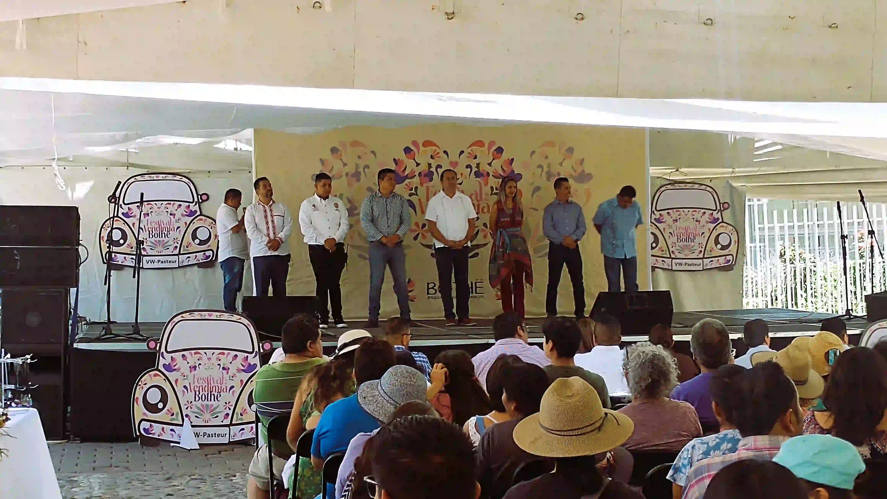
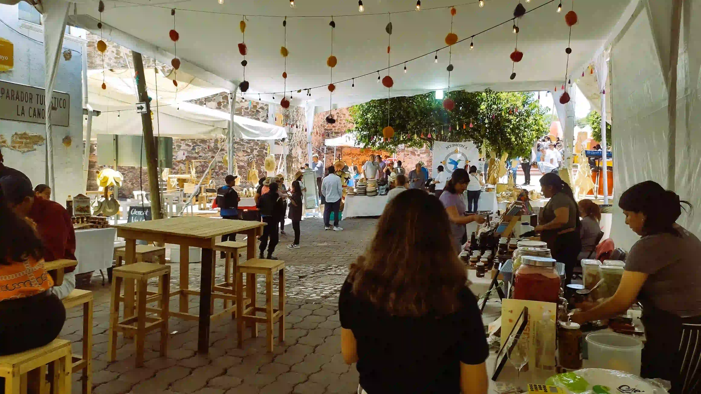
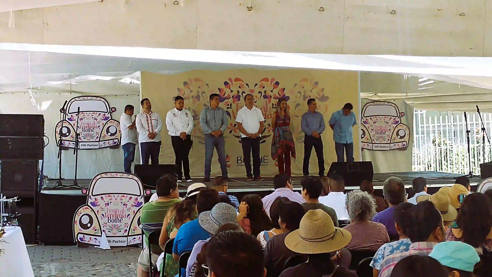
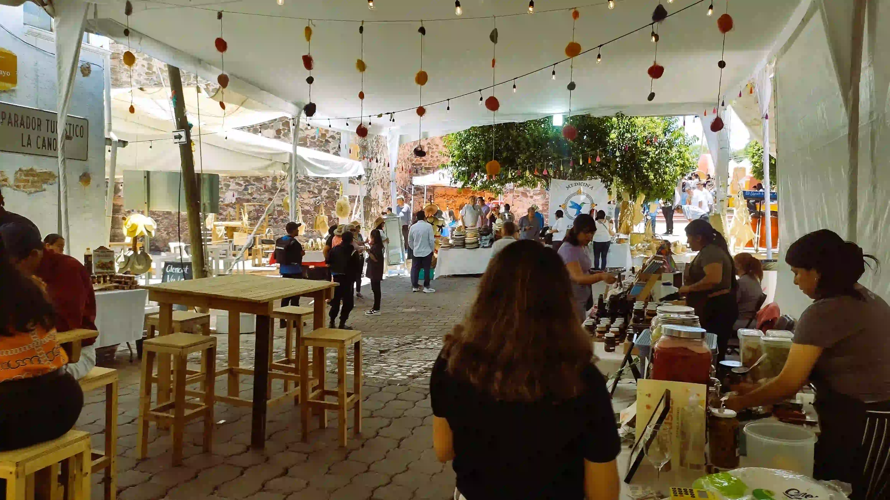
 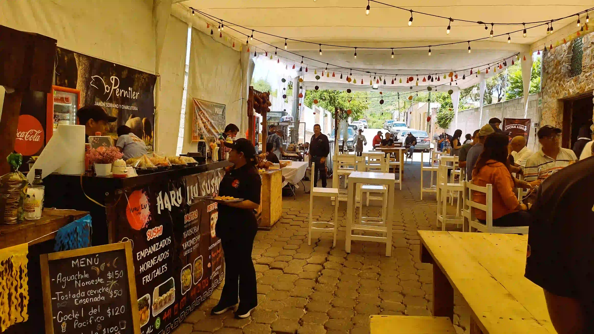
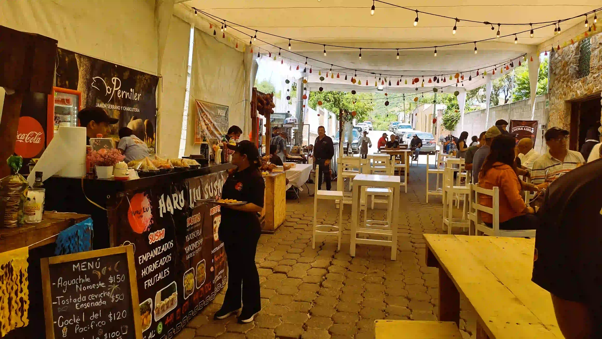
11:00 hrs
Palabras de bienvenida y mensaje en hñöhño
12:00 hrs
Charla Medicina Tradicional Colectivo Tsu T'udoni Villa Progreso
13:00 hrs
Danza Contemporánea Natura Pictrix de Irma Monterrubio
14:15 hrs
Casa de la cultura Villa Progreso
15:30 hrs
Palabra Viva Vicent Velázquez y Victoria Cuacuas
17:40 hrs
Kukulkán

 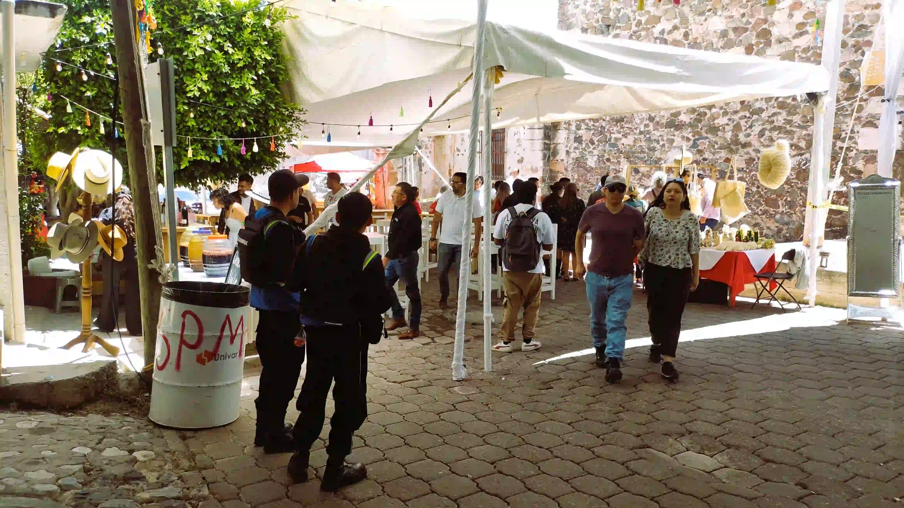
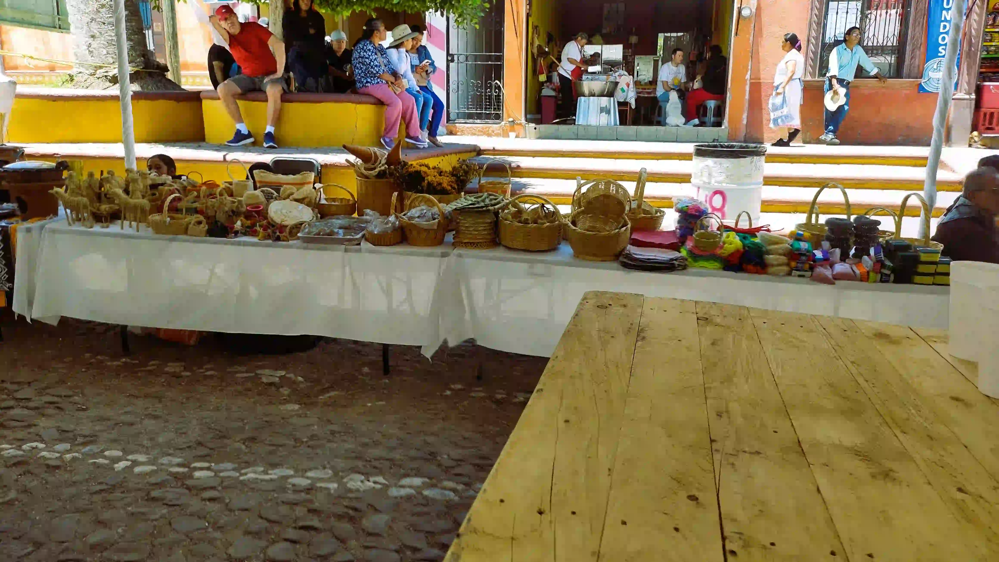
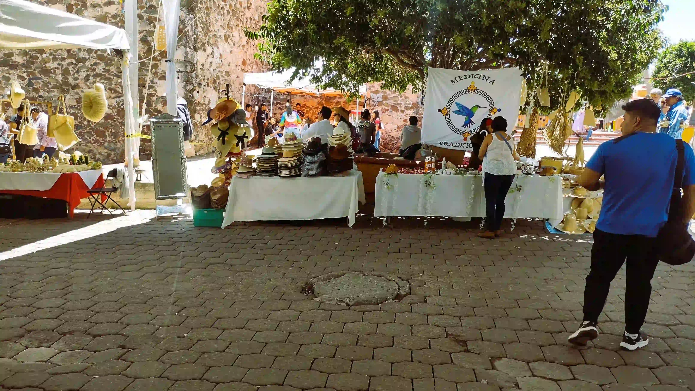
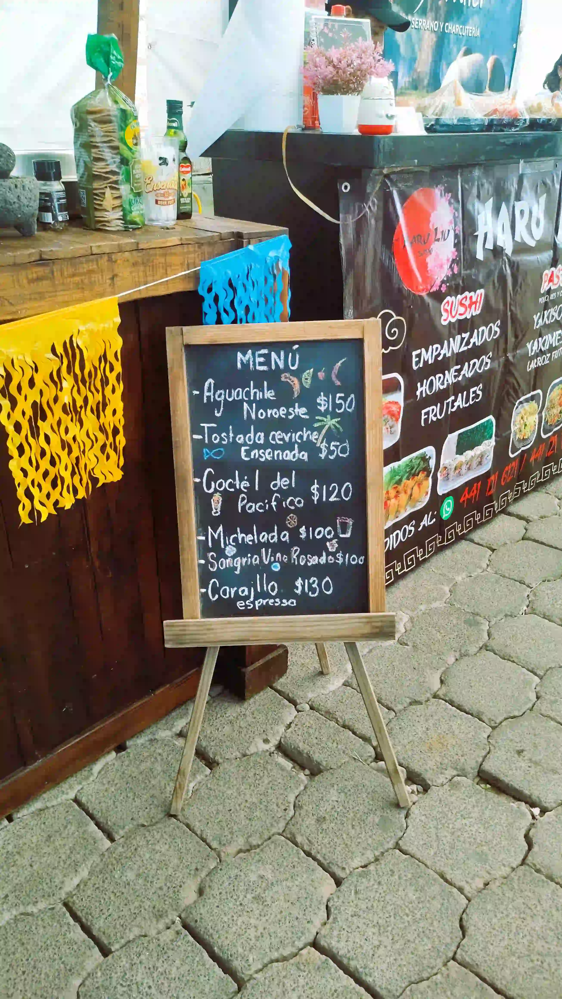
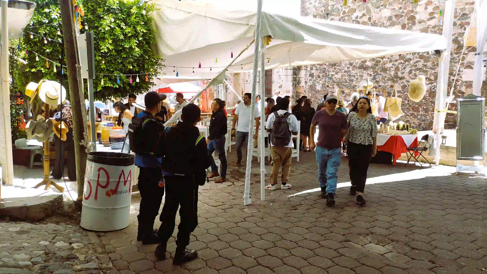
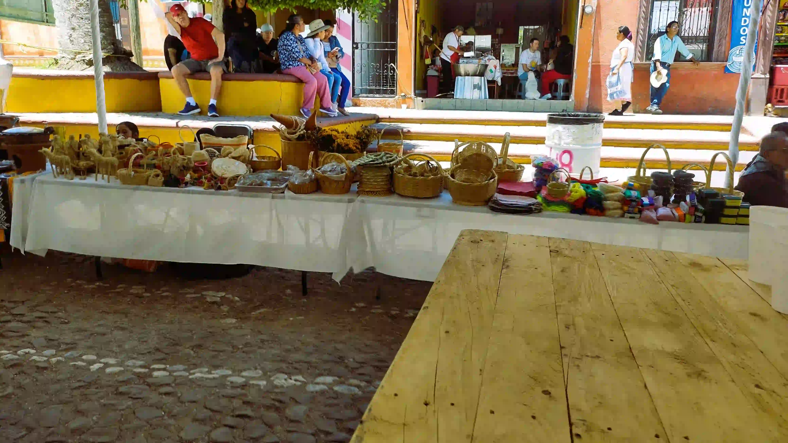
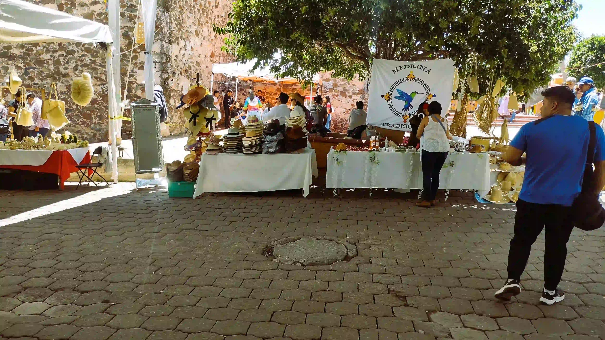
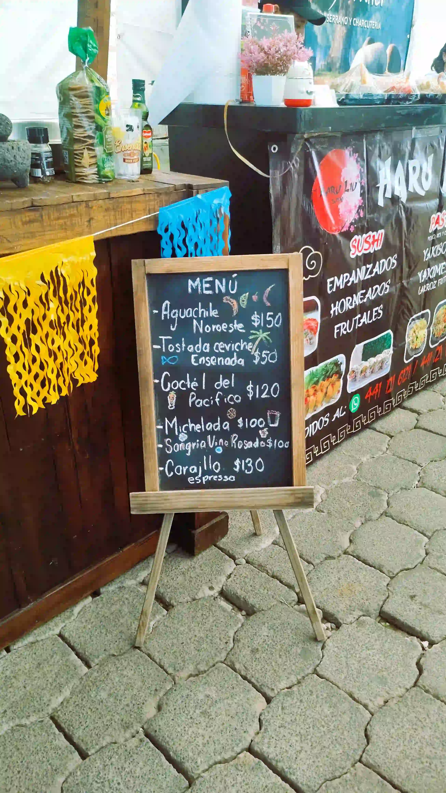